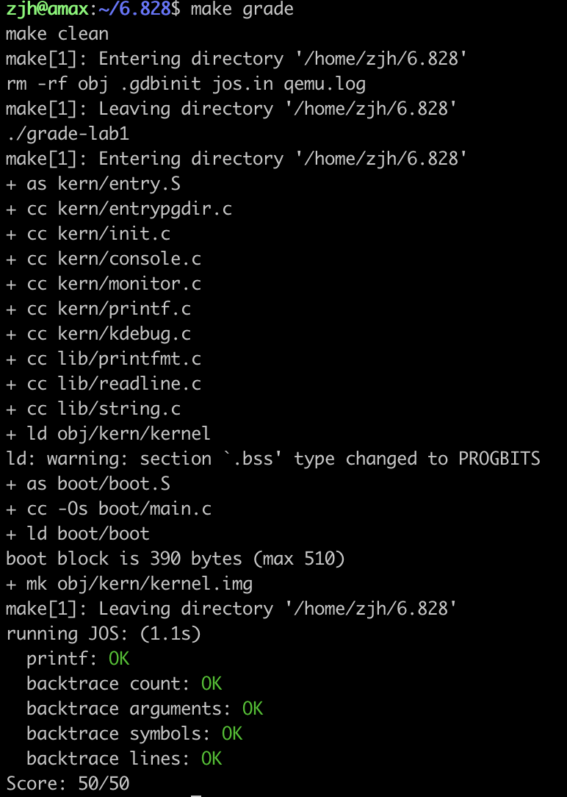

6.828 Lab1
文章目录
Lab1 实验过程与练习题
Ex.1&Ex.2 熟悉汇编语言与GDB调试
进入GDB模式的方法：
在第一个shell中执行make qemu-nox-gdb
在第二个shell中执行make gdb
6.828中的汇编语言为AT&T格式，movl A B中A为源对象，B为目标对象。
详细的内容可以浏览 https://pdos.csail.mit.edu/6.828/2018/readings/pcasm-book.pdf 。
GDB操作在CSAPP的bomb lab中使用过，但基本忘记了，这里记录一些常用指令。
si N ：执行N步，N省略时为1
x/Nx addr ：查看地址addr开始的N个字节的16进制内容，N省略时为1
x/Ni addr：查看地址addr开始的N条指令，N省略时为1
c ：continue，继续执行
b function ：在function处设置断点
b *addr：在地址addr处设置断点
利用GDB探究启动阶段BIOS做了什么：
BIOS加载引导程序（Boot Loader）到内存中，然后启动系统。
开机时自动将CS值置为0XF000，IP为0XFFF0，进入BIOS起始处（距离BIOS顶端0x100000只有16字节，因此第一句直接进行跳转）。
如何找到Boot Loader（引导程序）？ （not sure）
从第一个磁盘扇区（每个扇区512字节）开始，载入内存0x0000:0x7c00内，若扇区最后两字节为55 AA，则确认为引导程序（因此引导扇区最多510字节）。
确认引导程序后，将Boot Loader转移到0x7c00开始处，并将程序转移至0x7c00处继续执行。
|
|
加载地址为何时0x7c00？
IBM最早的个人电脑IBM PC 5150用的是Intel最早的个人电脑芯片8088，当时，搭配的操作系统是86-DOS。这个操作系统需要的内存最少是32KB。内存地址从0x0000开始编号，32KB的内存就是0x0000～0x7FFF。
8088芯片本身预留了地址空间0x0000～0x03FF，用来保存各种中断向量的储存位置。所以，内存只剩下0x0400～0x7FFF可以使用。为了把尽量多的连续内存留给操作系统，Boot Loader就被放到了内存地址的尾部。由于Boot Loader所在的这个扇区是512字节，另外Boot Loader数据和栈需要预留512字节。所以，Boot Loader加载位置是0x7c00，而且因为操作系统加载完成后Boot Loader不需要再使用，这部分内存之后操作系统是可以重复利用的。0x7FFF - 512 - 512 + 1 = 0x7C00
Ex.3 初探Boot Loader(引导程序)
在0x7c00处设置断点b *0x7c00，观察程序运行过程，结合boot/boot.S boot/main.c obj/boot/boot.asm，回答下列问题。
何时进入32位保护模式，为什么需要进入32位保护模式？
At what point does the processor start executing 32-bit code? What exactly causes the switch from 16- to 32-bit mode?
|
|
在0x7c2d处的指令: ljmp $PROT_MODE_CSEG, $protcseg
跳转到了32位代码处，即从0x7c32处开始执行32位代码。
在0x7c2a处开启cr0寄存器的PE位，从16位实模式转换到32位保护模式。
引导程序的最后一条指令是什么，内核的第一条指令是什么，内核的第一条指令的地址？
What is the last instruction of the boot loader executed, and what is the first instruction of the kernel it just loaded? Where is the first instruction of the kernel?
在0x7d6b处的指令: 0x7d6b: call *0x10018，是引导程序最后一条指令。
在0x10000c处的指令: 0x10000c: movw $0x1234,0x472，是内核第一条指令。
引导程序怎么知道加载内核该读取几个扇区？
How does the boot loader decide how many sectors it must read in order to fetch the entire kernel from disk? Where does it find this information?
利用ELF文件的程序头表，可能有若干个程序头表，由ELF文件头获取。
程序头表中包含4个成员是 p_offset、p_va、p_filesz 和 p_memsz。其中通过 p_offset 可以找到该段在磁盘中的位置，通过 p_va 可以知道应该把这个段放到内存的哪个位置，而之所以需要 p_filesz 和 p_memsz 这两个长度是因为 .bss 这种节在硬盘没有存储空间而在内存中需要为其分配空间。
根据这些信息，对每个段，从 p_offset 开始，读取 p_memsz 个 byte 的内容（需要根据扇区(sector)大小对齐），放入 p_pa 开始的内存中。通过 objdump 命令可以查看：
|
|
Ex.4 C语言指针练习
阅读代码，理解数值来源、地址信息。
|
|
Ex.5 ELF文件格式，链接地址与加载地址
ELF(Executable and Linkable Format)是经历编译、链接后生成的二进制文件格式，可以分为这样几个部分: ELF 文件头、程序头表(program header table)、节头表(section header table)和文件内容。(位于inc/elf.h)
ELF文件头为固定长度，程序头表中每个表项就代表一个段，这里的段是不同于之前节的概念，几个节可能会包含在同一个段里。
而其中文件内容部分又可以分为这样的几个段: .text段（代码段）、.rodata 段（只读数据段，比如代码中的字符串常量就在这个段内）、.stab 段、.stabstr 段、.data 段（数据段，这个段里包含已初始化的变量）、.bss 段（未初始化的变量）、.comment 段。
利用objdump -h可以查看文件的段头信息，objdump -x可以查看所有头部信息。
|
|
可以发现kernel文件中包含7个段，且VMA（virtual memory address/link address/链接地址）与LMA（loading addres/加载地址）不同。 而boot文件中则包含5段，且VMA与LMA相同。
所谓加载地址就是该段落实际存放在的物理地址，而链接地址则是执行过程中期望的起始地址，这一起始地址的需求主要源于程序连接过程中链接器对代码中的变量、函数等符号进行一个地址编排，赋予这些抽象的符号一个地址，然后在程序中通过地址访问相应变量和函数。
值得注意的是，由于BIOS会默认将boot写入物理地址0x7c00处，因此LMA=0x7c00不会改变。 另一方面，Kernel的链接地址和加载地址却是不一样的，链接地址是 0xF0100000，加载地址是0x00100000，也就是说Kernel加载到了内存中的 0x00100000 这个低地址处，但是却期望在一个高地址 0xF0100000 执行，为什么要这么做呢？这是因为我们的内核通常期望链接和运行在一个高的虚拟地址，以便把低位的虚拟地址空间让给用户程序使用。但是，以前的机器通常没有 0xF0100000 这么大的物理内存，因此需要通过处理器的内存管理硬件来将 0xF0100000 映射到 0x00100000，我们在下一节会看到这个机制是怎么实现的。
再次基础上，引出了第五个练习题。还有点不理解
Trace through the first few instructions of the boot loader again and identify the first instruction that would “break” or otherwise do the wrong thing if you were to get the boot loader’s link address wrong.
如果改变boot文件生成过程，将链接地址改为0x7c04，由于BIOS会把boot loader固定加载到内存地址的0x7c00，在0x7c00处断点，执行如下指令时错误
|
|
这里涉及到了跳转，由于加载地址在0x7c04，链接计算出来的地址也进行了偏移，而内存中的地址由于是从0x7c00开始的，所以实际没有偏移，结果跳转到了错误的地址。
Ex.6 利用ELF文件以及GDB验证内核的入口地址
在上述实验中，通过程序运行过程call指令，发现内核的第一条指令地址为0x0010000c。
利用objdump -f也可以获得类似结果。
|
|
另一方面，由于call *0x10018的存在，可以利用GDB查看内存数据，判断入口地址。
|
|
Ex.7&Ex.8 内核的初步映射过程
观察内核指令movl %eax, %cr0前后，0x00100000 以及 0xf0100000两处内存的数据情况。
Before:
|
|
After:
|
|
由此可以发现，通过将entrypgdir.c中已经设置好高位地址的页目录项entry_pgdir载入cr0，可以将虚拟地址 0x00000000 到 0x00400000 以及 0xf0000000 到 0xf0400000 都被转为物理地址 0x00000000 到 0x00400000。
此外，kern/entry.S中的分页机制值得记录：
|
|
还有看到了一道思考题，感觉很不错，如果将kern/entry.S中的 jmp *%eax 改成 call *%eax，会报triple fault，为什么呢？
想想call和jmp的区别以及entry_pgdir在低地址和高地址的页表的映射权限有什么区别，报错的地址是 0x7be8，此时的esp是0x7bec，我想你应该知道原因了(因为call需要写入返回节点地址，而低物理地址0x7bec没有写入权限)。
Ex.8 则需要考虑，如果地址映射不成功，则程序会在哪里出现问题？
我认为与上面的思考类似，在0x10002d: jmp *%eax指令出现故障。
Ex.8 print函数的理解
补充%o在此不进行赘述。
question 1:
Explain the interface between printf.c and console.c. Specifically, what function does console.c export? How is this function used by printf.c?
答：console.c中提供了cputchar()函数
question 2:
Explain the following from console.c:
|
|
答：将1-79行挪到0-78行，将79行的每个字符全部置为’ ’
question 3:
|
|
In the call to cprintf(), to what does fmt point? To what does ap point?
List (in order of execution) each call to cons_putc, va_arg, and vcprintf. For cons_putc, list its argument as well. For va_arg, list what ap points to before and after the call. For vcprintf list the values of its two arguments.
答：fmt是格式化输出字符串，ap是输出的数据
question 4:
Run the following code.
|
|
运行后屏幕输出 He110 World。
原因：d(57601) = 0xe101,ASCII(0x72) = r,ASCII(0x6c)=l,ASCII(0x64)=d,ASCII(0x00) = ‘\0’ ,x86是little-endian，显示’rld’.
question 5:
In the following codecprintf("x=%d y=%d", 3);, what is going to be printed after ‘y=’? (note: the answer is not a specific value.) Why does this happen?
答：由于y未指定，所以会输出一个不确定的值。详情可见man va_arg
Ex.9 内核中栈的构成
Determine where the kernel initializes its stack, and exactly where in memory its stack is located. How does the kernel reserve space for its stack? And at which “end” of this reserved area is the stack pointer initialized to point to?
首先在内核起始地址0x10000c处设置断点，执行几步后，可以发现mov $0xf0110000,%esp，则栈的顶部（地址最大的位置）位于0xf0110000。
|
|
接着，查看kern/entry.S,inc/memlayout.h与inc/mmu.h，可以发现栈的大小为8*4kB。因此，栈位于0xf0110000到0xf0108000处。
|
|
Ex.10 内核中递归过程的栈结构
To become familiar with the C calling conventions on the x86, find the address of the test_backtrace function in obj/kern/kernel.asm, set a breakpoint there, and examine what happens each time it gets called after the kernel starts. How many 32-bit words does each recursive nesting level of test_backtrace push on the stack, and what are those words?
在未进入 test_backtrace前，锁定以下代码，并发现进入函数前的%esp=0xf010ffe0。
|
|
进入函数test_backtrace(5)后%esp=0xf010ffdc,而在进入下一次递归test_backtrace(4)前，%esp=0xf010ffd0，因此可以观察这期间的栈内数据。
|
|
可先发现在递归前，入栈return addr,old %ebp,old %ebx。
接着三个数据是函数自己生成的缓冲区间。
然后0xf010ffc4与0xf010ffc0处的数据是为了cprintf准备的，0x00000005并未被覆盖掉，而字符串"entering test_backtrace %d\n"的首地址被0x00000004覆盖，是下次递归的函数参数。
Ex.11&Ex.12 利用栈现实函数信息与调用过程
Add a backtrace command to the kernel monitor, and extend your implementation of mon_backtrace to call debuginfo_eip and print a line for each stack frame of the form:
|
|
首先，要根据Ex10中的练习，利用%ebp与栈中存储结构，发现返回地址、函数参数以及前一段栈帧的%ebp。这期间可以尝试使用inc/x86.h中的read_ebp()函数，利用嵌入式汇编获取%ebp。
接着，在kern/kdebug.c中的debuginfo_eip()函数，可以利用%eip获取到对应指令所处的文件名、文件行数、函数名以及函数位置等。这里的具体方式我还没有特别理解（感觉不是重点，理解过程可以参考下面的几个步骤），大体上来说，就是利用很多__STAB_*标示出源文件与ELF的详细信息，并且保存与内存中，便于搜索使用，而debuginfo_eip()函数就是搜索的过程。
|
|
最后，则是利用这些信息按照题目要求进行输出，根据提示可以使下面的小技巧，因为获取信息时可以得到函数名的长度。printf("%.*s", length, string) prints at most length characters of string.

文章作者 Askl
上次更新 2020-09-01